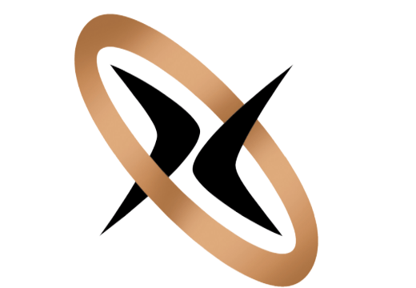

<mat-toolbar class="mat-toolbar mat-raised-button">
    <mat-toolbar-row>
        <span style="width: 68px;"></span>
        <span style="width: 74px;margin-left:-24px">
        </span>
        <span class="example-spacer"></span>
        <a *ngIf="!(isLoggedIn | async)" class="example-icon" [routerLink]="['login']" routerLinkActive="active-link" mat-raised-button style="background-color:rgb(111, 166, 203);color: #131212d9;">Login</a>
        <!-- <a class="example-icon"  *ngIf="!(isLoggedIn | async)" mat-raised-button color="warn" routerLinkActive="list-item-active" [routerLink]="['signup']">Signup</a> -->
        <a class="example-icon"  *ngIf="(isLoggedIn | async)" mat-raised-button color="primary" routerLinkActive="list-item-active" style="background-color:rgb(111, 166, 203);color: #131212d9;" (click)="logout()">Logout</a>
        <!-- <a class="account_circle"  *ngIf="(isLoggedIn | async)" mat-raised-button colo="primary"><span class="material-icons">account_circle</span></a> -->
    </mat-toolbar-row>
</mat-toolbar>
